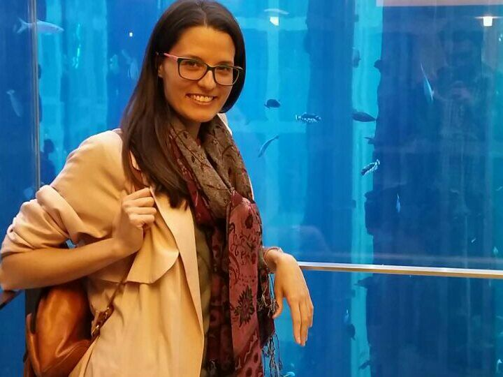

I am a Postdoctoral Research Associate in the Department of Language and Linguistic at the University of York. Since 2015 I have been working in the project Voice and Identity – Source, Filter, Biometric funded by the UK Arts and Humanities Research Council (AHRC), collaborating with Paul Foulkes, Peter French and other colleagues from the University of York and JP French Associates.
The aim of the project is to compare the performance of different methods for forensic voice comparison – from linguistics and phonetics, acoustics, and automatic speaker recognition (ASR) – on the same set of recordings. I also have a special interest in developing reliable perceptual evaluations of voice quality (see Research Interests)
In December 2014 I defended my PhD in the Spanish National Research Council (CSIC, Madrid), supervised by Joaquim Llisterri (Universitat Autonoma de Barcelona) and Juana Gil (CSIC).
My doctoral research focused on the voice study of similar-sounding speakers: monozygotic and dizygotic twins, as well as non-twin siblings. I tackled this question from a threefold perspective: (1) study of formant dynamics in vocalic sequences, (2) analysis of glottal/phonatory features, and (3) use of the automatic speaker recognition system Batvox.